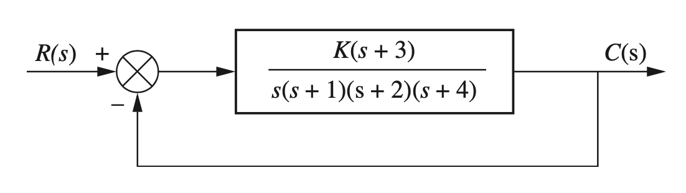

Assignment Part 2
Nyquist Plot
Q1. Consider a close loop system with unity feedback.
- For the \(G(s)=s-1\), hand sketch the Nyquist diagram
- Determine \(Z = N+P\), algebraically find the closed-loop pole location, and show that the closed loop pole location is consistent with the Nyquist diagram calculation.
- Use the controller \(D(s) = k = 2\).
Q2. Consider the following controller D and system G
For controller \(D(s) = k\) and \(G(s) = \frac{s + 1}{s^2(s + 10)}\)
- Hand sketch the asymptotes of the Bode plot magnitude and phase for the open-loop transfer function
- Hand sketch Nyquist diagram.
- Discuss stability margins
Gain and Phase margins
Q3. Given a closed loop system with unity gain with the following loop transfer function:
\[G(s) = \frac{125(s + 1)}{(s+5)(s^2 +4s+25)}\]
- Plot the Bode magnitude and phase plots for the open loop system
- Determine the gain and phase margin.
Root Locus
Q4. Properties of the Root Locus
Given
\[G(s) = \frac{K(s+2)}{(s^2+4s+13)}\]
Calculate the angle of G(s) at the point \((-3 + j0)\) by finding the algebraic sum of angles of the vectors drawn from the zeros and poles of G(s) to the given point.
Determine if the point \((-3 + j0)\) is on the root locus.
If the point specified in a is on the root locus, find the gain, K, using the lengths of the vectors.
Q5. Sketching the Root Locus
- Sketch the root locus for the system shown
|  |
Lead-Lag Compensation Design
Q6. Design a lead compensator
Given a unity feedback system where the plant \[G(s) = \frac{K}{s(s+50)(s+120)}\]
Design a lag-lead compensator to have: - 20% overshoot - \(\Phi_m > 48^o\) - \(T_s=0.2s\) - Steady state requirement \(K_v=\lim_{s\rightarrow0}sG(s)=50\)
Putting everything together
Consider the DC motor transfer function between of the motor-load combination which is given by:
\[ \frac{\theta(s)}{V_f(s)} = \frac{K_m}{s(Js+f)(L_fs+R_f)} = \frac{\frac{K_m}{JL_f}}{s(s+\frac{f}{J})(s+\frac{R_f}{L_f})}. \;\;\;\;(1) \]
The system above can also be written as:
\[ \frac{\theta(s)}{V_f(s)} = \frac{\frac{K_m}{JL_f}}{s(s+\frac{f}{J})(s+\frac{R_f}{L_f})} = \frac{\frac{K_m}{fR_f}}{s(\tau_f s+1)(\tau_L s+1)} \]
where \(\tau_f=\frac{L_f}{R_f}\) and \(\tau_L=\frac{J}{f}\).
When \(\tau_L > \tau_f\), the field time constant \(\tau_f\) can be neglected.
Let’s choose the following values:
moment of inertia of the rotor 0.01 kg.m^2
motor viscous friction constant 0.1 N.m.s
- (Ke) electromotive force constant 0.01 V/rad/sec
- (Kt) motor torque constant 0.01 N.m/Amp
electric resistance 1 Ohm
electric inductance 0.5 H
Note that in SI units, \(K_e = K_t = K\)
Q7. Close the loop with a unitary feedback and discuss the system performance.
Q8 Calculate the stability margins
Q9. Increase the inertia of the rotor and discuss what happens
- Use values
J=[0.1, 1, 2]
Q10. Designing a Controller for the Motor
Design requirements:
$t_r s $ (90%)
Max overshoot \(20\%\) at \(5.75s\)
Settling time to \(\pm0.05\%\) \(\approx 11.15s\)
Zero steady state error
Choose any method you prefer.
Discuss the performance
Q11. Optional
What happens if you add noise or load disturbances?
How would you implement a PID controller?
Use notebook
99_workspaceand design a controller for the pendulum attached to the DC motor. You might need to look at notebooks90_simple_pendulumand91_DC_motorto understand the model of the pendulum and of the motor used.